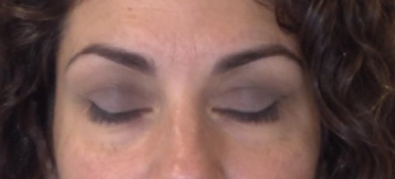
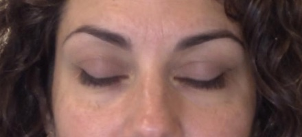
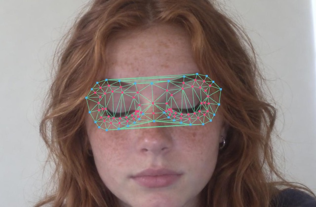
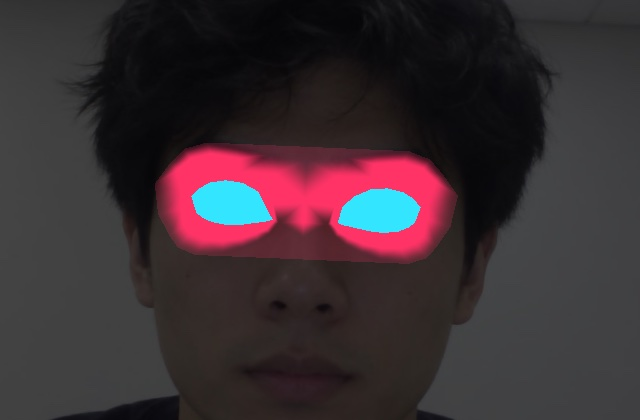
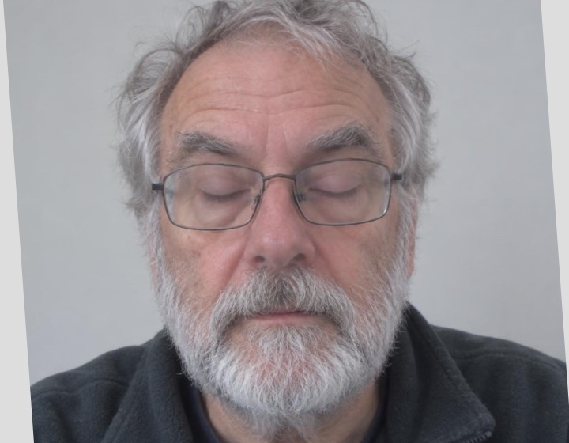

Eyes Closed Mirror
A browser mirror that shows you yourself with your eyes closed. We take one photo when you arrive, ask an image model to close the eyes, then graft the closed eyelids back onto the live video in real time. This page covers which model is fast enough, and how the real-time part works.
Open the mirror → Try without a cameragpt-image-2.6-flare on /v1/images/edits with quality=low, complexity=low, output_format=jpeg. Size 816x816 (the smallest allowed) gives the tightest tail. That is about 4.8 s median, 5.3 s p90, inside the 6 s budget. The edit keeps the framing almost exactly (≈1–2% of the eye-to-eye distance), which is what lets us map the result back onto the live face. GPT Image 2.5 Flare is ~3 s slower, and Sunburst is ~2× slower.
Which model is fastest?
Each config edited 4 synthetic webcam-style portraits 3 times (12 trials). All used the same prompt: close the eyes, change nothing else. Times are wall-clock from this laptop, so they include upload and download. Each dot is one trial; the black tick is the median.
| Config | n | min | median | p90 | max | eyes closed* | drift† |
|---|
* Mean MediaPipe eyeBlink blendshape on the outputs (0 = open, ~0.7+ = clearly closed). † Mean movement of the stable eye-region landmarks between input and output, as a % of eye-to-eye distance. Lower means the output lines up with the original photo. Both are computed live in your browser when this page loads.
What I learned about the knobs
complexity=lowmatters. On 2.6 Flare it cut the median from ~5.6 s (default complexity) to ~4.8 s. GPT Image 2.5 Flare rejects the parameter (Complexity 'low' is not supported for this image model).quality=mediumcosts ~0.6 s at the median and widens the tail. For an eyelid patch that gets blended into video, low is plenty.- Output size. 816² vs 1024² barely moves the median, but it trimmed the p90 from 6.6 s to 5.3 s. OpenAI won't go below ~655k pixels.
- Concurrency caveat. In the first pass several configs ran at once against the same account (each config's own trials ran one at a time). The 2.5 Flare and default-complexity rows ran in a second pass with less concurrency.
Not measured (yet)
I couldn't benchmark Google's Nano Banana family: gemini-3.1-flash-lite-image (Nano Banana 2 Lite), gemini-3.1-flash-image, gemini-nano-banana-2.1, gemini-3-pro-image, gemini-2.5-flash-image. The available Gemini key is on the free tier, which allows 0 image requests per day, so every call returned 429. Third-party write-ups claim Nano Banana 2 Lite edits in 1–2 s, which would beat Flare by a lot. It's the most important thing left to test. Enable billing on the key, then run node bench/bench.mjs 3 gemini. The harness already speaks the Interactions API, with thinking_level: minimal and image_size: 1K.
Also untested: fal-hosted models (bytedance/seedream/v5.5/edit, blackforestlabs/flux-3/edit-image, Qwen image edit), which need a FAL_KEY. Aggregator claims of 1–3 s for some of these are unverified.
Do the edits work?
Eye region from the first trial of each config, for each test face. The test faces were generated by Flare, so no real person's photo went to any API. Under each crop: latency, MediaPipe eyes-closed score and landmark drift (they fill in once MediaPipe has run).
How the mirror works
Starting point: FaceSubstitution
The blending is a port of the Clone class from FaceSubstitution (Kyle McDonald and Arturo Castro). The source face is warped onto the destination using the tracker mesh. Both the warped source and the live frame are blurred, with the blur restricted to the mask. The low-frequency difference is then added back:
// FaceSubstitution/GPUCloning/bin/data/Clone.frag
vec3 srcColor = texture2DRect(src, pos).rgb;
vec4 dstColorBlur = texture2DRect(dstBlur, pos);
vec3 offset = (dstColorBlur.rgb - srcColorBlur.rgb);
gl_FragColor = vec4(srcColor + offset, 1.);Fine detail (lashes, lid creases) comes from the generated image. Overall color and lighting come from the live camera, so the patch keeps up as the light in the room changes. Changes for this piece:
- MediaPipe instead of FaceTracker, and a custom mesh. The mesh only uses landmarks that don't move when the eyes close: eye corners, lower lid rings, brows, nose bridge, cheekbones. The eyelid contour is left out on purpose. Triangles then span the whole eye, so the closed lid is carried over rigidly instead of being stretched to fit the open lid. Pink points have blend weight 1, blue points weight 0, so the patch feathers out between them.
- Normalized-convolution blur.
MaskBlur.fragstopped each 1-D kernel at the first masked-out sample. Here every tap is weighted by the mask and divided by the total weight. That runs at half resolution in two separable passes and stays in RGBA8. - Eye holes are left out of the blur statistics. This was the one real problem. The live frame has an open eye (dark iris, white sclera) exactly where the source has skin. Averaging both into
blur(live) − blur(src)pushed a grey-violet cast onto the eyelids. The live eye contours, dilated, are now marked as "swap fully, but don't sample", so the offset is skin matched to skin.





Tracking: locked to the pixels
The first version tracked with MediaPipe's VIDEO mode plus a light One Euro filter, and the eyelids visibly trailed the face. To measure this, the camera-free demo has a benchmark mode (mirror.html?demo=synthetic-3&bench=300&motion=fast). The test face shakes along a known path: up to ~35 px per frame at 30 fps, ±7° roll and ±8% scale, with sensor noise and an exposure flicker. Every tracked point is then compared to its true position.
- MediaPipe
VIDEOmode tracks internally and smooths its landmarks, which can't be turned off from JavaScript. That's why it's so steady when you hold still. Under fast motion its points land 3.5 px off, with 12 px jumps. IMAGEmode detects from scratch on every frame. It has no lag but jitters about 0.75 px from frame to frame.- The fix: pyramidal Lucas-Kanade optical flow follows the actual skin texture from one frame to the next. One robust affine motion is fitted to the flow of ~90 eye-region points, weighted by texture strength. The
IMAGE-mode detector then nudges each point back toward itself to stop drift: gently when it only disagrees by noise, quickly when the disagreement is real, like raised eyebrows. Each LK window compensates for brightness, so auto-exposure doesn't read as motion. - Tracking, the face crop and the displayed frame all come from one snapshot of each camera frame. The overlay can never land on a different frame than the one it was measured on.
| Tracking (fast head shake) | lag | frame-to-frame wobble rms / p99 | position error |
|---|---|---|---|
| VIDEO mode + One Euro (first version) | 0.27 frames | 3.64 / 13.5 px | 7.0 px |
| VIDEO mode, raw | 0.10 frames | 2.71 / 11.7 px | 3.5 px |
| IMAGE mode every frame | 0.00 | 0.75 / 1.97 px | 0.58 px |
| Optical flow + IMAGE-mode correction (now) | 0.00 | 0.13 / 0.33 px | 0.35 px |
At rest the flow tracker wobbles 0.11 px rms (VIDEO mode: 0.03 px, thanks to its smoothing). Detection plus flow takes ~20 ms per frame. The displayed video is delayed by exactly that much, so face and eyelids stay in sync.
Open questions for the installation
- Head turns. The source is one frontal snapshot. A piecewise-affine warp holds up to roughly ±20° of yaw. Beyond that the far eye foreshortens wrong. A second capture at an angle, or fading the swap by yaw, would help.
- Who's in front. A new visitor is detected by the face disappearing for 2 s. In a busy room, people swapping in place would keep the previous person's eyelids. Comparing face-shape signatures (landmark ratios) at capture time would catch that.
- The 5 s wait is part of the experience. The mirror is normal until it suddenly isn't. If Nano Banana 2 Lite really does 1–2 s, the reveal can feel instant. Worth testing both.
- Privacy. Every visitor's face goes to OpenAI. For a gallery, that needs signage, or a local model (a fine-tuned eye-closing diffusion model on a GPU box would likely beat 1 s).
Running it
cd ~/Desktop/eyes-closed
node server.mjs # http://localhost:8417/ (keys read from .env or ../.env)
node server.mjs --https # self-signed https, so other devices can use their camera
node bench/bench.mjs 3 # re-run the benchmark (optionally a model regex as 2nd arg)Keys: OPENAI_API_KEY and GEMINI_API_KEY. Keys stay on the server; the browser only talks to /api/edit. Camera access needs localhost or https.
Sources
- OpenAI: GPT Image 2.6 Flare model page · Image generation guide
- Google AI Studio: models · Image generation (Interactions API)
- fal.ai image-to-image models
- tryinfer: image-editing model comparison · Sandbase: editing API timings (unverified third-party claims)
- arturoc/FaceSubstitution · MediaPipe Face Landmarker